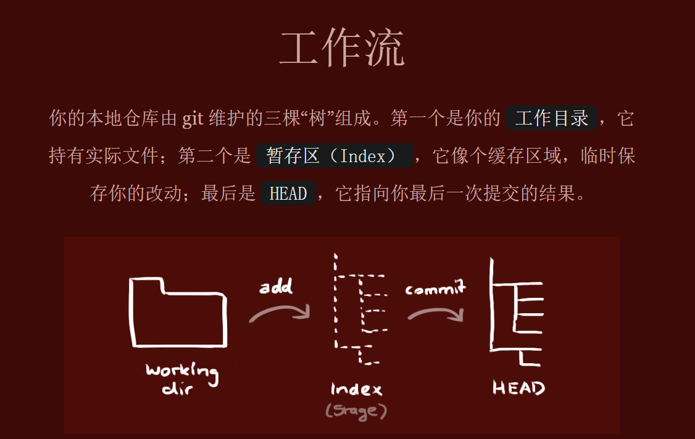
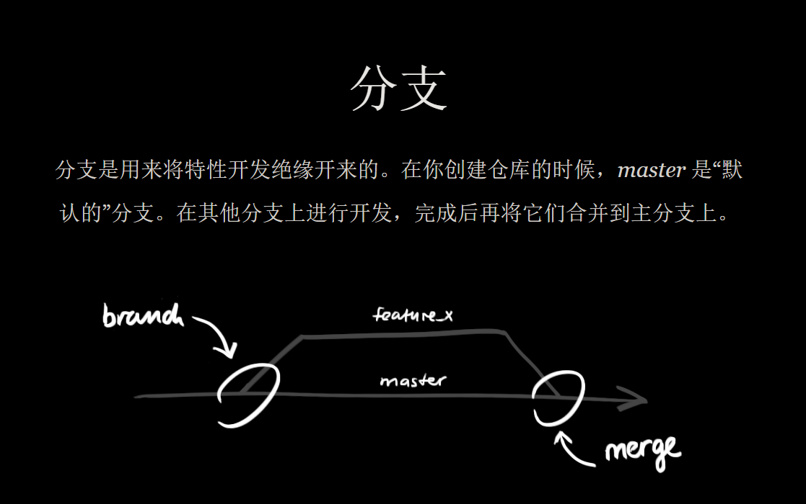

git
目录
学习地址：
git - the simple guide - no deep shit! http://rogerdudler.github.io/git-guide/index.zh.html
Git for Windows We bring the awesome Git VCS to Windows https://gitforwindows.org/
简介： git工作流： work(工作目录) =>Index(暂存区)=> head（最后一次提交结果）=> 推送到远端仓库
work（工作目录）: 就是我们实际操作的 文件
index（暂存区）: 可以理解成缓冲区， 临时保存我们的改动
head : 最后一次提交结果。

git 初步学习
检出仓库
git clone url filePath（路径）
添加和提交
把我们改动的文件提交到index去。
git add <fileName> //添加指定文件
git add * //添加所有文件
git commit -m "代码提交信息" //提交代码到head
推送改动
把我们的head文件推送到远端仓储中
git push origin master //master 是分支 ， 可以替换成自己的分支
分支
分支的作用： 分支是用来分隔我们的代码。
mast 是默认分支， 我们在其他的分支上开发， 完成后再将他们合并到主干上。

git checkout -b feature_x //创建feature_x 分支
git checkout master //切回分支
git branch -d feature_x //删除分支
git push origin <branch> //推送分支到远端仓库
更新和合并
git pull // 拉取并更新本地仓库至最新改动
git merge <branch> //合并分支
解决冲突
以上更新和合并可能会出现冲突 ， 这个时候就需要我们手动解决冲突,改完后，我们需要执行
git add <fileName> //提交
git diff <source_branch> <target_branch> //查看差异
标签
git tag 1.0.0 提交id // 在提交id创建一个标签名为1.0.0
git log // 查看提交id
git push origin 标签名 //推送标签名
git tag // 列出本地标签
替换本地改动
git checkout -- <filename> //丢弃work 中的改动
图形化工具
git 提交规范
msg格式
<类型>[可选的作用域]: <描述>
[可选的正文]
[可选的脚注]
类型
# 主要type
feat: 增加新功能
fix: 修复bug
# 特殊type
docs: 只改动了文档相关的内容
style: 不影响代码含义的改动，例如去掉空格、改变缩进、增删分号
build: 构造工具的或者外部依赖的改动，例如webpack，npm
refactor: 代码重构时使用
revert: 执行git revert打印的message
# 暂不使用type
test: 添加测试或者修改现有测试
perf: 提高性能的改动
ci: 与CI（持续集成服务）有关的改动
chore: 不修改src或者test的其余修改，例如构建过程或辅助工具的变动